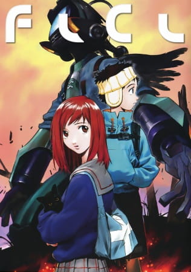
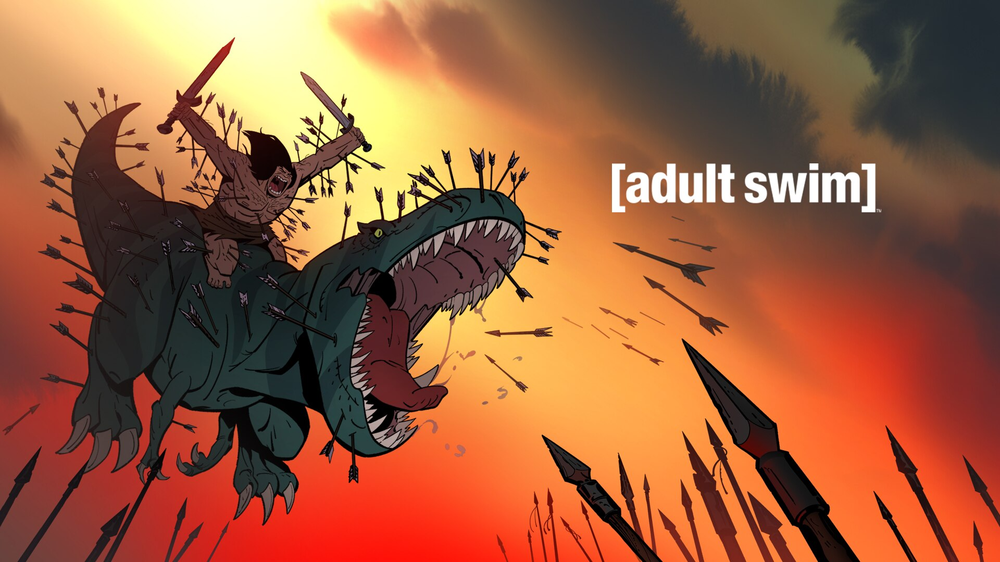

My Favorite Shows, Music, and Movies
Shaw Shank Redemption

"The Shawshank Redemption" is a critically acclaimed film directed by Frank Darabont, based on a Stephen King novella. It tells the gripping story of a wrongfully convicted banker named Andy Dufresne, who forms a unique bond with a fellow inmate while navigating the harsh realities of prison life.
The Perfect Score

"Reality Bites" is a coming-of-age film directed by Ben Stiller that explores the lives of a group of friends navigating post-college life in the 1990s. It delves into themes of love, friendship, and the challenges of finding one's identity in a rapidly changing world.
Reality Bites

"The Perfect Score" is a teen comedy film that follows a group of high school students who band together to steal the answers to a standardized test. As they face moral dilemmas and unexpected obstacles, they learn valuable lessons about integrity, friendship, and the pressure to succeed.
FLCL
"FLCL" (Fooly Cooly) is a surreal and fast-paced anime series known for its eccentric storytelling and unique visual style. It revolves around the life of a young boy named Naota, who encounters a mysterious girl wielding a guitar-shaped weapon, leading to a series of bizarre and mind-bending events that blend sci-fi, coming-of-age themes, and absurd humor.
One Piece

"One Piece" is a popular manga and anime series created by Eiichiro Oda. It follows the adventures of Monkey D. Luffy, a pirate with the ability to stretch his body like rubber, and his crew, as they journey through the vast and dangerous seas in search of the ultimate treasure known as the One Piece. The series is known for its vast world-building, epic battles, and memorable characters.
Primal
"Primal" is an animated series created by Genndy Tartakovsky, known for its visually stunning animation and minimal dialogue. Set in a prehistoric world, it follows the unlikely partnership between a caveman and a dinosaur as they navigate through a brutal and unforgiving landscape, facing both natural and supernatural threats. The series explores themes of survival, primal instincts, and the bond between two unlikely allies.